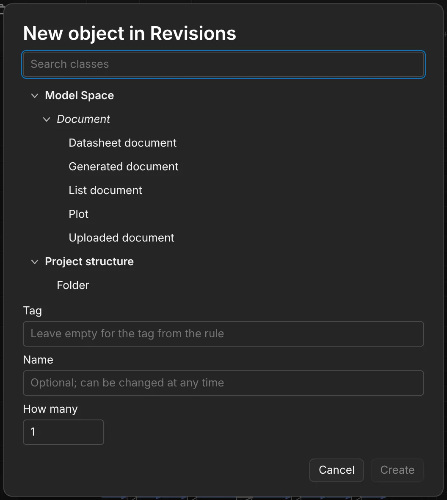
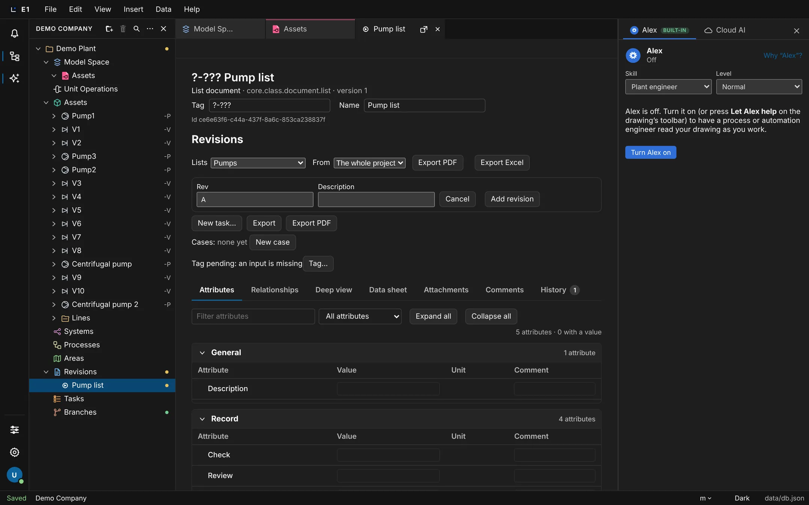
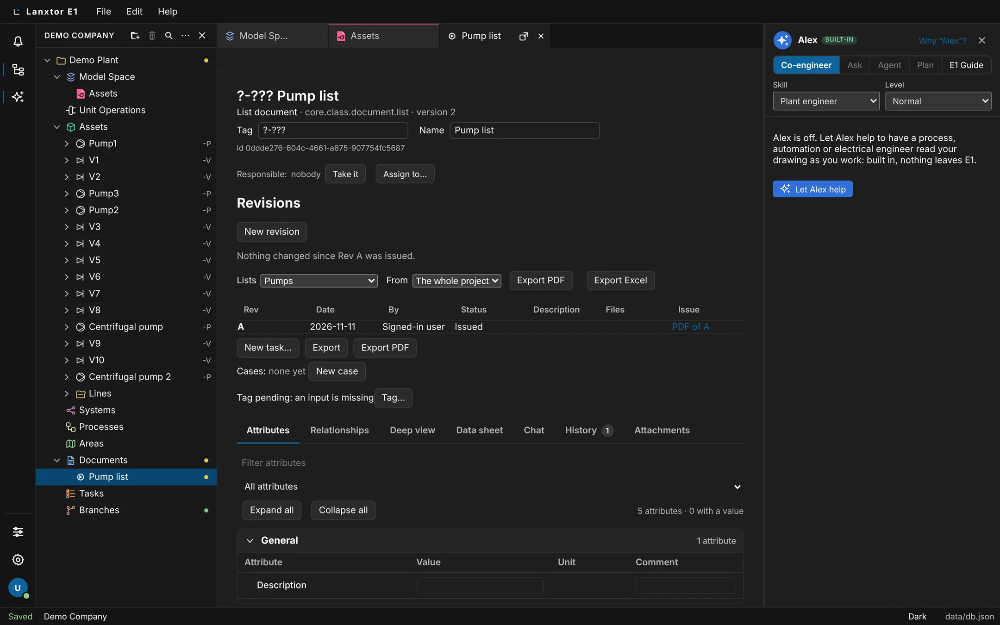
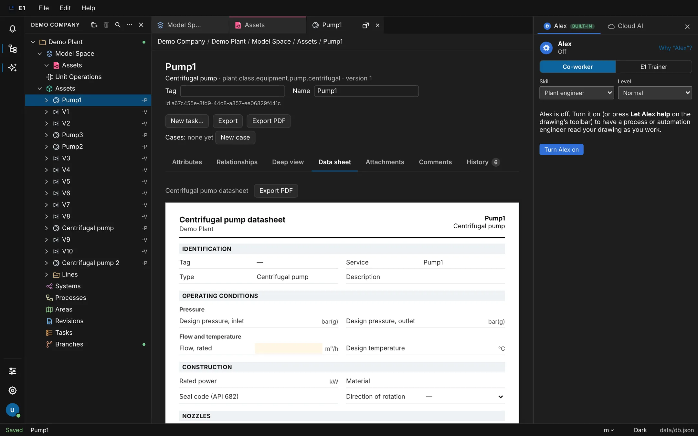
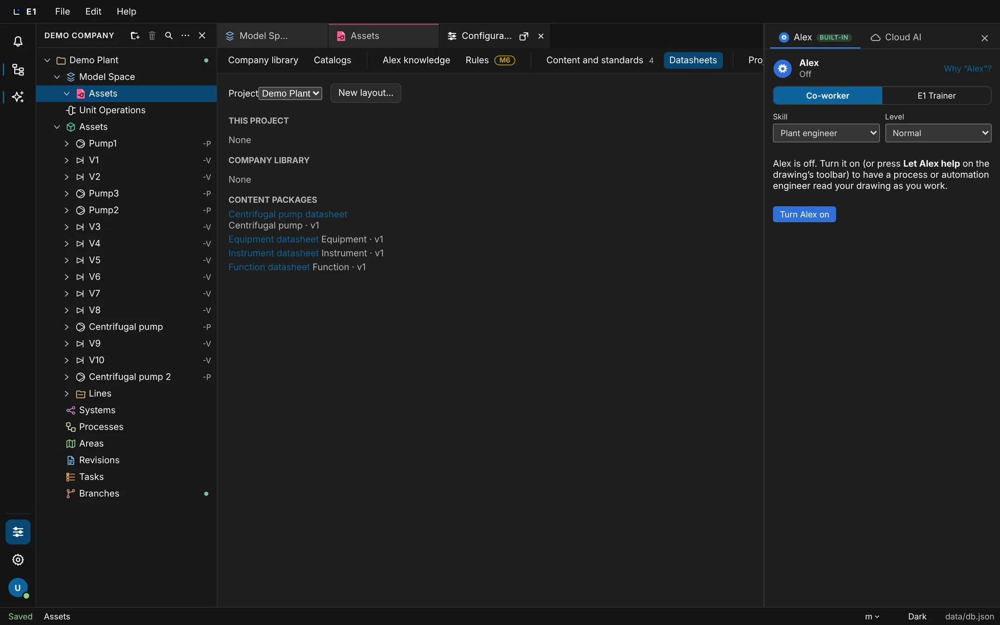

Academy / User guide / Documents, revisions and datasheets
7. Documents, revisions and datasheets
Documents and their revisions, issuing, changed since, PDF and Excel output, sheet PDF and printing, datasheets and the datasheet designer.
About this guide
Documents are the deliverables of a project: lists, drawings plotted to PDF, datasheets and uploaded files. Each document has revisions A, B, …; issuing a revision freezes it and its PDF, and E1 then shows what changed since. Datasheets are also the everyday screen of an object, with a designer to lay them out.
Typical workflow
- Open the Documents section and make a new document: a list document, a plot, an uploaded PDF or a datasheet document.
- Add revisions and set their status; colleagues see the Updated mark.
- Issue a revision, then follow what changed since.
- Make a PDF of a P&ID 2D space or print it.
- Open an object's datasheet, edit it, print it to PDF, and change its layout in the datasheet designer.
- Before you start
- A project with objects and a drawn 2D space, for example Demo Plant. A list document needs a saved query (see Save a query as a template).
- Who
- Reading needs any project role. Adding revisions needs a role that may write documents; issuing needs a Lead; PDF and Excel output need a role that may export.
The Documents section
The project section that holds every document and its revisions.
- Where
- Explorer → Documents
- Before you start
- A project is open in the explorer.
Steps
| # | Action | Expected result |
|---|---|---|
| 1 | Click Documents under the project in the explorer. | The Documents section is selected in the explorer and its page opens. The toolbar shows New document…, New folder, Import, Export and a filter button All ▾. |
| 2 | Right-click Documents in the explorer. | The menu offers New document…, New folder and Query ▸. |
New document…: list, plot, uploaded or datasheet document
Make a document in the Documents section by choosing its kind.
- Where
- Right-click Documents → New document…, or the section toolbar's New document…
- Who
- A project role that may write documents
- Before you start
- The project has a Documents section.
Steps
| # | Action | Expected result |
|---|---|---|
| 1 | Right-click Documents → New document…. | The dialog “New object in Documents” opens. Under Document it lists Generated document, with Datasheet document, List document, Plot, Revision and Version under it, and Uploaded document; Create is off. |
| 2 | Type list in Search classes and choose List document. | List document is selected and Create turns on. |
| 3 | Leave Tag empty (“Leave empty for the tag from the rule”) and type Pump list in Name. | The fields hold your values. |
| 4 | Click Create (or press Enter in Tag or Name). | The dialog closes and the document's window opens; its Revisions panel says “No revision yet.”. |

A double-click on a kind under Recent creates the document at once; a double-click in the search list only chooses the kind. Esc does not close the dialog; click Cancel or outside it.
The document number is its tag, made by the project's tag rules. A Generated document is a loop diagram, made from the drawing (see Loop diagrams).
Revision and Version are new kinds of generated document. You can make one, but E1 does not generate their content yet.
List documents from a saved query, with PDF and Excel
A list document shows a saved query from a starting point and prints it to PDF and Excel with a title block.
- Where
- A List document's window → Revisions panel → “What this list shows”
- Who
- A project role that may write documents; Export PDF and Export Excel need a role that may export. A restricted project asks you to sign in again.
- Before you start
- A project query “Equipment list” is saved for the project, and a List document exists (see New document…).
Steps
| # | Action | Expected result |
|---|---|---|
| 1 | Open the list document. | The Revisions panel shows “What this list shows” with Lists (“Choose a saved query…”) and From (The whole project or a section). From, Export PDF and Export Excel stay off until a saved query is chosen. |
| 2 | Click New revision, then Add revision. | Revision A is listed. |
| 3 | Set Lists to “Equipment list” and From to Assets. | The choices are kept. |
| 4 | Click Export PDF. | “Writing the PDF…”, then a file ending “Rev-A.pdf” downloads and the panel says “The PDF is downloaded.”. |
| 5 | Click Export Excel. | “Writing the workbook…”, then a file ending “Rev-A.xlsx” downloads. |
| 6 | Open both files. | Both carry the project, the document, its number, the newest revision and the date. The workbook has title rows, then the table with an E1 id column; the PDF has no E1 id column. |

With no saved queries the panel says “Save a query first (a query tab's Save): a list shows a saved query.”. The workbook can be read back with Update from Excel… in the query: its title rows are skipped. File names are “<number or document>-Rev-<label>.pdf” or “.xlsx”.
Export PDF and Export Excel use the newest revision, whatever its status. The frozen PDF of an issued revision is its PDF of <label> link.
The window does not preview the list; open the query from the explorer to see its rows.
Uploaded documents: revise a PDF from outside
Keep a PDF made elsewhere as a document and attach files to each revision.
- Where
- An Uploaded document's window → Attachments tab and Revisions panel
- Who
- A project role that may write documents
- Before you start
- A PDF file on your computer.
Steps
| # | Action | Expected result |
|---|---|---|
| 1 | Right-click Documents → New document…, choose Uploaded document, and click Create. | The document's window opens. |
| 2 | Open its Attachments tab, click Add files… and choose the PDF. | The PDF is listed with Open and Remove. |
| 3 | In the Revisions panel, click New revision. | The form lists the attachment under Files with a checkbox. |
| 4 | Tick it and click Add revision. | The new revision's Files column shows 1. |
These steps are taken from the screen labels; no automated test covers the upload path yet.
Add revisions A, B, …
Add a revision with its label, description and files; E1 proposes the next label.
- Where
- A document's window → Revisions panel → New revision
- Who
- A project role that may write documents (a reviewer can read but not add)
- Before you start
- A document is open with “No revision yet.”.
Steps
| # | Action | Expected result |
|---|---|---|
| 1 | Click New revision. | The form opens with Rev prefilled “A”, Description, Files, Cancel and Add revision. |
| 2 | Type For review in Description and click Add revision. | The revision list shows a row A with “For review”. The columns are Rev, Date, By, Status, Description, Files, Issue. |
| 3 | Click New revision again. | Rev is prefilled “B”. |
| 4 | Change Rev to A and click Add revision. | It is refused: “The document already has revision A.”. |
| 5 | Set Rev back to B and click Add revision. | B is listed on top: the newest revision is first. |
The next label follows the last one: A → B … Z → AA, 0 → 1 … 09 → 10, 3a → 3b. A label has at most 20 characters; Add revision is off while it is empty.
Draft and In review
Mark a revision that is not issued yet as Draft or In review.
- Where
- Revision list → Status column
- Who
- A project role that may write documents
- Before you start
- A document has revision B, not issued.
Steps
| # | Action | Expected result |
|---|---|---|
| 1 | In the row of B, set the Status dropdown (“Status of B”) to In review. | The row shows In review. |
| 2 | Reload the page. | B is still In review. |
The dropdown offers Draft and In review. It is shown only for revisions not yet issued, and only to people who may write; others see the status as text.
The Updated mark on Documents
The Documents row shows Updated when a colleague added a revision since you last looked.
- Where
- Explorer → the Documents row
- Before you start
- A colleague added a revision after you last opened the Documents section.
Steps
| # | Action | Expected result |
|---|---|---|
| 1 | Look at the Documents row in the explorer. | It shows a mark whose hover text reads “Updated”. |
| 2 | Click Documents. | Documents is selected and the mark clears. |
Your own new revisions do not set the mark.
E1 remembers what you have seen in this browser only. Another browser or device shows the mark again.
Issue a revision
Issuing freezes a revision and its PDF; an issued revision cannot change afterwards. While the revision gate is on, an open error on what the document shows refuses the issue.
- Where
- Revision list → Issue column → Issue A
- Who
- A Lead on the project. An Engineer is refused.
- Before you start
- A list document “Pump list” shows the saved query “Pumps” and has revision A, not issued.
Steps
| # | Action | Expected result |
|---|---|---|
| 1 | Click Issue A. | The browser asks “Issue revision A? The document and its PDF are frozen as they are now and cannot change afterwards.”. |
| 2 | Click OK. | The Status of A shows Issued as plain text, without a dropdown. The Issue column shows the link PDF of A. The panel says “Nothing changed since Rev A was issued.”. |
| 3 | Click PDF of A. | The issued PDF opens. It stays byte for byte as issued, even after the model changes. |
| 4 | On a document that lists a pump with an open error (for example a check rule's), click Issue A and confirm. | It is refused, naming the errors: “A cannot be issued: 1 open error on what it shows. … Fix it, or accept it in Checks.”. Fix the pump, or accept the finding on its Checks tab, and issue again. |
| 5 | On a document where B is issued but A is not, click Issue A and confirm. | It is refused: “A later revision is already issued; A stays as it is.”. |

Issuing freezes what the document shows: a list's rows, a plot's 2D space with its objects, or a datasheet's object with its children and its layout version. Any later attempt to change an issued revision is refused with “An issued revision does not change.”.
An issued document cannot be retagged.
Changed since Rev A, and Modified and Added marks
After an issue, the document lists what changed since, and the explorer marks each changed object.
- Where
- The document's Revisions panel, and the marks in the explorer
- Before you start
- Revision A of “Pump list” is issued.
Steps
| # | Action | Expected result |
|---|---|---|
| 1 | Change Pump1's Design pressure (In) to 16 bar(g). | The value is saved. |
| 2 | Reload and open “Pump list”. | The panel reads “Changed since Rev A: Pump1 (modified).”. |
| 3 | Expand Assets in the explorer. | Pump1 has a mark M; its hover text reads “Modified since Pump list (since Rev A)”. The folders above it show Modified too. |
Changes are modified, added or removed. Removed objects are listed in the panel only; they have no mark in the explorer. The line names the first eight changes; with more it ends “and N more.”, for example “…, V9 (added) and 3 more.”.
PDF of a P&ID 2D space
Export PDF on a 2D space's page plots the 2D space to a vector PDF with a border and a title block.
- Where
- The 2D space page's toolbar → Export PDF
- Who
- A project role that may export
- Before you start
- The project has a drawn 2D space, for example Assets.
Steps
| # | Action | Expected result |
|---|---|---|
| 1 | Click the 2D space Assets in the explorer (one click, not a double-click). | The 2D space's page opens, with Export PDF on its toolbar. |
| 2 | Click Export PDF. | A file “Assets.pdf” downloads. |
| 3 | Open the PDF and zoom in. | It shows every layer, a border and a title block with the project, the 2D space, the scale and the page. Tags, line numbers and notes stay sharp and can be searched as text. |
When the 2D space is printed through a plot document, the title block also names the document number and name, and the revision and its date. If tags overlap or fall outside the page, an alert says “The plot has N warnings: …”. Since 2026-11-06 a resized symbol keeps its line width in the PDF.
There is no CAD background layer, and the border is drawn by E1, not taken from a border you choose.
Attribute labels on symbols (for example "P 16 bar(g)") are printed as text with their current values (Attribute labels).
The file is made by a job on the server, which may wait its turn first when the server is busy. At most 20 jobs a minute per person, else You started more than 20 jobs in a minute; wait a minute and try again. The file is kept for 7 days, then The result of this job is no longer kept: results are kept for a week. Start the job again.
Print… and Ctrl+P
Print the open 2D space with File → Print… or Ctrl+P (⌘P).
- Where
- File → Print…, or Ctrl+P (⌘P)
- Who
- A project role that may export
- Before you start
- A 2D space is open.
Steps
| # | Action | Expected result |
|---|---|---|
| 1 | Open the File menu. | Print… shows the shortcut Ctrl+P (⌘P). |
| 2 | Press Ctrl+P (⌘P). | The system print dialog opens with the 2D space's PDF, not the browser's print of the page. |
If the browser cannot print from its hidden frame, the PDF opens in a new tab instead; print it from there. The desktop app prints the same way.
The file is made by a job on the server, which may wait its turn first when the server is busy. At most 20 jobs a minute per person, else You started more than 20 jobs in a minute; wait a minute and try again. The file is kept for 7 days, then The result of this job is no longer kept: results are kept for a week. Start the job again.
Plot documents: 2D space, page format and layers
A plot document prints a 2D space on a chosen page format with chosen layers, and has revisions.
- Where
- A Plot document's window → “What this plot shows”
- Who
- A project role that may write documents; Export PDF and Print… need a role that may export
- Before you start
- The project has a drawn 2D space Assets.
Steps
| # | Action | Expected result |
|---|---|---|
| 1 | Right-click Documents → New document…, search plot, choose Plot, type PID 001 in Name, and click Create. | The plot's window opens with 2D space (“Choose a 2D space…”), Page (A3), four layer checkboxes Process, Instrument, Electrical, Annotation (all ticked), Export PDF and Print…. |
| 2 | Look at the controls before choosing a 2D space. | Page, the layer checkboxes, Export PDF and Print… are off until a 2D space is chosen. |
| 3 | Set 2D space to Assets and Page to A4. | The other controls turn on. The choices are kept. Page offers A4, A3, A2, A1 and A0. |
| 4 | Untick the Annotation layer. | It is left out of the plot. |
| 5 | Click Export PDF. | “Plotting…”, then a PDF downloads and the panel says “The PDF is downloaded.”, or “N warnings: …” for overlapping or out-of-page tags. The Annotation layer is not drawn. |
| 6 | Click Print…. | The panel says “The print dialog is open.” and the system print dialog opens. |
Framing only a region of the 2D space is not in the app yet: the plot covers the whole 2D space. A region can only be set by asking Alex (with its AI help) or through the API, so review check G4 cannot be done from the screen alone.
Export PDF on a 2D space's page always prints every layer; choose layers in a plot document.
Open an object's datasheet
Double-click an object to open its datasheet, the object's everyday screen.
- Where
- Double-click an object in the explorer; right-click a symbol → Open datasheet; the object window's Data sheet tab
- Who
- Anyone who may view the project, also read-only users
- Before you start
- The project has a pump Pump1 and a valve V1 on the 2D space Assets.
Steps
| # | Action | Expected result |
|---|---|---|
| 1 | Expand Assets and double-click Pump1. | A tab “Datasheet of Pump1” opens with the heading “Centrifugal pump datasheet”. The header shows the project and “Pump1 / Centrifugal pump”; a Nozzles table lists “suction”. |
| 2 | On the Assets 2D space, with the Select tool on, double-click the Pump1 symbol. | Pump1's object window opens on the Attributes tab, also when another tab was chosen last; its Data sheet tab, or right-click the symbol → Open datasheet, shows the same datasheet. With another tool on, a double-click does not open it. A double-click on an off-page connector opens the 2D space it continues on instead. |
| 3 | Double-click V1 in the explorer. | A valve has no designed layout, so its object page opens on the Attributes tab with the heading V1. |


The bar shows the layout's name, or “Default layout, from the class's attribute groups”.
Enter on a selected object does not open it, and there is no separate floating datasheet window; the tab can be detached like any tab.
Edit values on the datasheet
Type values straight into the datasheet; units are added and checked, and Undo takes a change back.
- Where
- An object's datasheet
- Who
- A project role that may edit objects
- Before you start
- Pump1's datasheet is open.
Steps
| # | Action | Expected result |
|---|---|---|
| 1 | Type 12 in “Design pressure, inlet” and press Enter. | The value is saved with the field's unit appended: a bare number gets the field's unit. |
| 2 | Click Edit → Undo (or Ctrl+Z (⌘Z)). | The field is empty again. |
| 3 | Type a value with a wrong unit and press Enter. | The value stays in the field in red with the reason; nothing is saved. |
| 4 | Press Esc. | The field goes back to its saved value. |
Pick lists show a dropdown starting with “—”; the choice is saved when you leave the dropdown (click elsewhere or Tab), not the moment you pick it. A read-only field shows its value with the reason on hover; a field the class does not have shows “Not in class”; missing required values are highlighted. The datasheet re-reads when anyone changes the project.
Datasheet PDF
Export PDF on the datasheet writes the layout's fields, section by section, to a PDF.
- Where
- The datasheet's bar → Export PDF
- Who
- A project role that may export
- Before you start
- Pump1's datasheet is open.
Steps
| # | Action | Expected result |
|---|---|---|
| 1 | Click Export PDF. | “Writing the PDF…”, then “Pump1-datasheet.pdf” downloads. |
| 2 | Open the PDF. | Its header holds the project, the object and its class; the fields follow section by section in the order on screen. |
The object window's own Export PDF next to New task… prints the attribute table, not the designed datasheet.
The PDF has no logo or other fixed header elements yet.
The file is made by a job on the server, which may wait its turn first when the server is busy. At most 20 jobs a minute per person, else You started more than 20 jobs in a minute; wait a minute and try again. The file is kept for 7 days, then The result of this job is no longer kept: results are kept for a week. Start the job again.
Datasheet documents
A datasheet document puts an object's datasheet under revision control.
- Where
- New document… → Datasheet document
- Who
- A project role that may write documents
- Before you start
- A project with objects.
Steps
| # | Action | Expected result |
|---|---|---|
| 1 | Right-click Documents → New document…, choose Datasheet document, and click Create. | The document's window opens with its Revisions panel. |
When a datasheet document's revision is issued, E1 records the object with its children and the layout version; its PDF is named “…-datasheet-Rev-<label>.pdf”.
The window has no picker for the object yet: the object can only be chosen by asking Alex (with its AI help) or through the API. Until then a datasheet document cannot be completed from the screen alone.
The hookup schedule (PDF and Excel)
The hookup schedule is the deliverable of a project's hookups: every hookup with its type, mounting and drawing, the instruments that use it, and its bill of material totalled for them. It is one document in Revisions, made again from the model each time you export it, and revised and issued like any other document.
- Where
- The explorer: right-click Assets ▸ Hookups → Hookup schedule; a hookup's window: Hookup schedule; then the document's window: Export PDF, Export Excel
- Who
- A project role that may create documents; exporting needs the permission to export the project, issuing the permission to issue revisions.
- Before you start
- The project uses hookups and has at least one (Hookups).
Steps
| # | Action | Expected result |
|---|---|---|
| 1 | Right-click Assets ▸ Hookups → Hookup schedule. | The document Hookup schedule opens; it is listed in Revisions. Its window has the revisions panel and a table of the hookups (Hookup, Type, Hookup drawing, Instruments). Doing it again opens the same document: a project has one. |
| 2 | Click New revision and then Export PDF. | A PDF downloads. Page 1 lists every hookup and how many instruments use it; then each hookup has a page of its own with its data, Instruments that use it (tag, class, description) and Bill of material with a column Total for n instruments. Every page shows the project, the revision and the date. |
| 3 | Click Export Excel. | A workbook downloads with the project, document, revision and date on top and a row per instrument: Hookup, Hookup type, Mounting, Hookup drawing, Instrument, Instrument class, Instrument description. A hookup no instrument uses has one row of its own. |
| 4 | Issue the revision (Issue a revision). | The PDF is kept with the revision as it was. The hookups and the instruments that used them are frozen with it, so Changed since shows what changed afterwards. |
The schedule is always made from the model: a new hookup or an instrument given another hookup shows in the next export without anything to update.
The datasheet designer
Copy or create a datasheet layout, add fields, preview it with an object, and publish it for a class.
- Where
- Left rail → Configuration → Datasheets
- Who
- Datasheet design on the project; others can read the layouts (“You can read these layouts; designing them needs Datasheet design on the project.”)
- Before you start
- Pump1 (a Centrifugal pump) exists in the project.
Steps
| # | Action | Expected result |
|---|---|---|
| 1 | Click Configuration in the left rail, then Datasheets. | Datasheet layouts shows Project, New layout…, and the layouts under This project, Company library and Content packages, each with its class and version. |
| 2 | Click Centrifugal pump datasheet. | It reads “Content package, read only”: there is no Publish, and Copy to edit… is shown. |
| 3 | Click New layout…, search Centrifugal pump, set Class to Centrifugal pump, type plant1.pump as the layout key with In This project, and click Create from the class. | The new layout opens: “This project · not published”. A key in use is refused: “That key is taken.”. |
| 4 | Set Name to Plant 1 pump datasheet. | The name shows “For Centrifugal pump and its subclasses.”. |
| 5 | In section Identification, choose Design pressure / In in “Add a field to Identification” and type psi in its unit. | The field is added with unit psi. |
| 6 | Click Undo. | The unit is empty again. |
| 7 | Click Save draft. | “Draft saved.”. |
| 8 | Click Publish. | “Published as version 1.”. |
| 9 | In Preview with object, type Pump1 and click Pump1. | The preview “Preview of Pump1” shows “Plant 1 pump datasheet”. |
| 10 | Double-click Pump1 in the explorer. | Its datasheet heading is “Plant 1 pump datasheet”, with a “Design pressure / In” field in Identification. |
What you can change
Pages (Add page, Remove page), sections (Add section, Columns 1–3, Up, Down, Remove section), groups (Add group, Add field to group), tables (Add table, Add column), and per field its label, unit, read only and Remove. Problems with fields the class lacks are listed under “Binding problems”. Submit for review says “Submitted for review.”; Withdraw vN asks “Withdraw version N? Projects pinned to it still read it.” and then says “Version N withdrawn.”; Use for this project says “This project uses it for the class.”.

Ctrl+Z (⌘Z) does not undo layout edits: use the designer's Undo button. Outside a text field, Ctrl+Z undoes your last saved change to the project instead.
One layout per class. A layout has no logo or other fixed elements yet.
Filter documents by kind
The All ▾ filter on the Documents page is meant to show only drawings, lists or datasheets.
- Where
- Documents section page → All ▾
The filter is on screen but not built: choosing Drawings, Lists or Datasheets only changes the button's label. It is planned for milestone M4.
What you will be able to do
- Show only the drawings, the lists or the datasheets of the Documents section.
Review check E4 (“filter documents by kind”) cannot pass yet.
Standard specification datasheets (ISA 20, API)
Specification datasheets in the industry formats, with operating-case tables and repeated blocks.
Planned: the design is a draft for review (2026-11-05) and not yet a roadmap stage. Nothing of it is in the app today.
What you will be able to do
- Use datasheets laid out like ISA 20 and API specification sheets.
- Fill operating-case tables and repeated blocks.